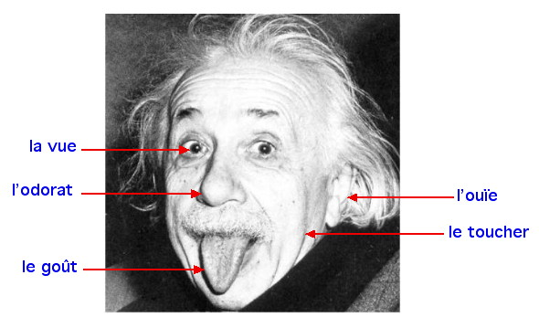

Cette photo n'est pas un trucage, Albert Einstein le père de "la relativité générale" a bien tiré la langue devant un photographe qui ne cessait de lui demander un sourire lors de son 72ème anniversaire, le 14 mars 1951.
retour